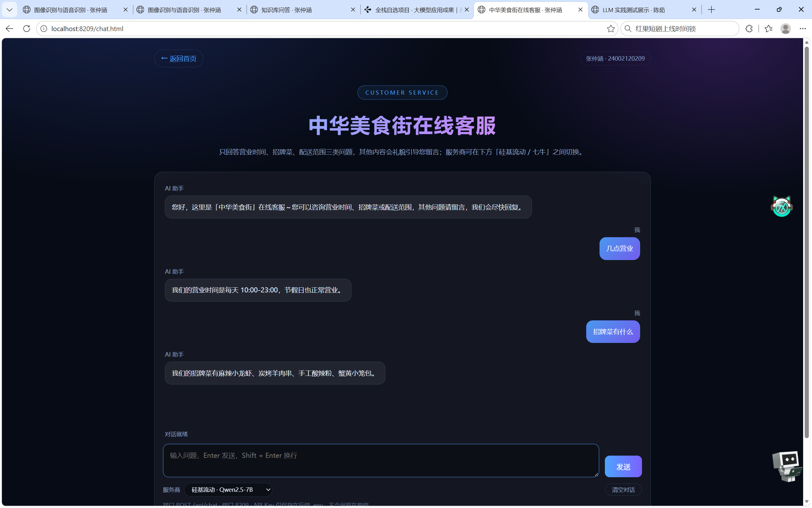
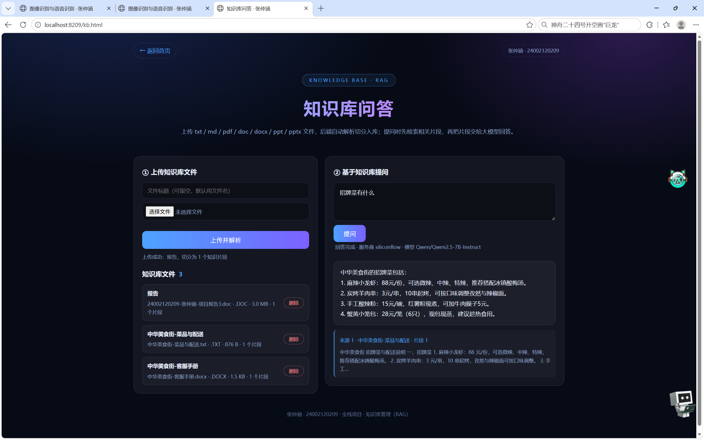
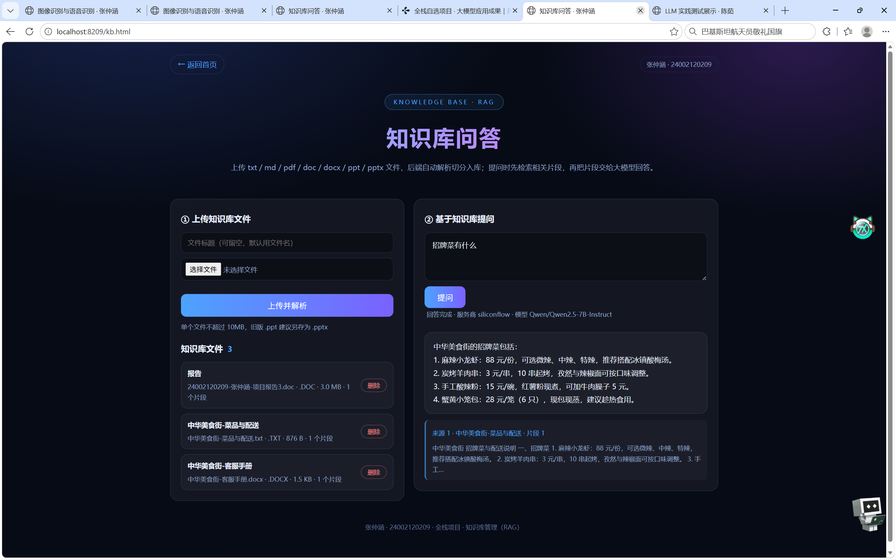
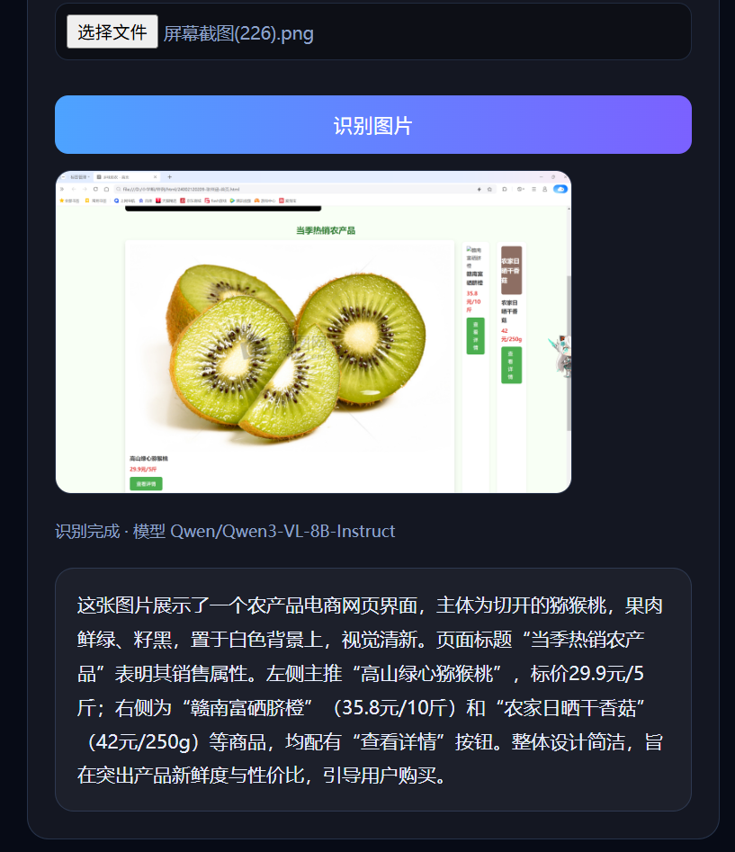
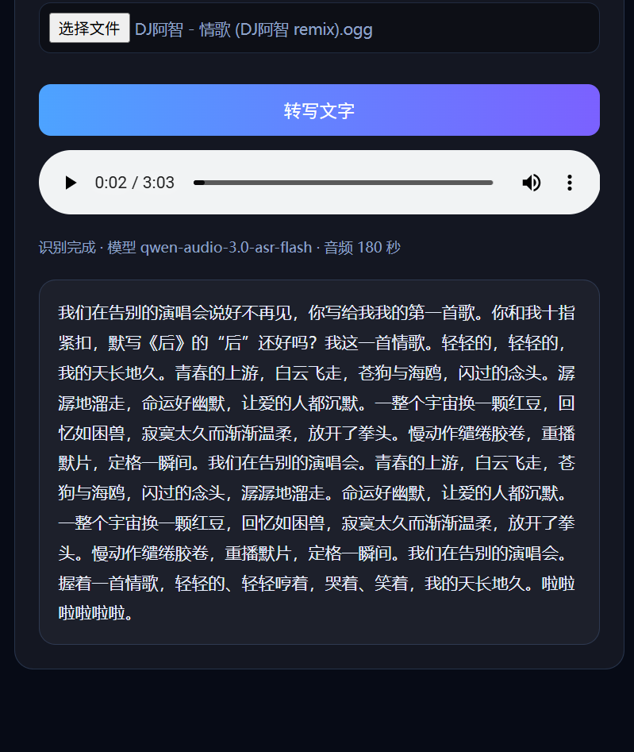

LLM PRACTICE · RAG · MULTIMODAL
大模型应用实践测试展示 · 四大功能实测
在线客服对话、知识库检索问答（RAG）、图像识别、语音识别，全部由本地 Node.js + Express 后端转发大模型请求。
张仲涵 · 24002120209 · 项目：科技资讯管理与图文展示（全栈实践）
01
智能对话 · 中华美食街在线客服chat.html · 硅基流动 / 七牛双服务商热切换
后端统一封装 POST /api/chat，Key 只存放在 .env；页面可切换服务商，多轮对话会带上完整历史消息。
多轮上下文system 人设硅基流动 / 七牛Key 不进前端错误友好提示
实测截图

依次提问「几点营业」「招牌菜有什么」——AI 按客服人设准确回答，底部显示当前服务商「硅基流动 · Qwen2.5-7B」
02
知识库问答 · 上传文档构建专属知识库kb.html · RAG 检索增强问答
支持 txt / md / pdf / doc / docx / ppt / pptx 上传，后端解析正文、按约 500 字切分入库；提问时先检索 Top 3 片段，再交给大模型回答并展示来源。
文件上传解析知识片段切分中文二元组检索来源引用知识库管理
实测截图（同一页面上下两部分）

上半部：上传《项目报告3.doc》等 3 个文件并解析成功，知识库列表可查看类型、大小、片段数并删除

下半部：提问「招牌菜有什么」命中《菜品与配送》片段，答出 4 道菜与价格，并附「来源 1」引用卡片
03
图像识别 · 看图说话multimodal.html · Qwen/Qwen3-VL-8B-Instruct
图片上传后由后端转 Base64，调用已有硅基流动 Key 的视觉模型，返回中文描述；后端控制台同步打印发送与收到的完整数据。
图片 Base64视觉模型中文描述≤8MB
实测截图（页面左栏）

上传农产品电商页面截图——模型准确描述猕猴桃主体、价格标签「高山绿心猕猴桃 29.9 元/5 斤」与整体配色版式
04
语音识别 · 语音转文字multimodal.html · 七牛 qwen-audio-3.0-asr-flash
音频上传到 POST /api/ai/asr，后端转发七牛 /v1/audio/transcriptions，把 3 分钟歌曲准确转写为中文歌词，并返回音频时长。
语音转文字Qwen-Audio-3.0-ASR-Flash时长统计≤20MB
实测截图（页面右栏）

上传 3 分 03 秒歌曲——识别完成，模型 qwen-audio-3.0-asr-flash，输出完整歌词（接口计费时长 180 秒）
05
实现说明 · 技术栈与安全要点Node.js + Express + MySQL + 原生前端
- 后端：Express 4.19 + mysql2 + multer + pdf-parse + adm-zip，RESTful + MVC，统一返回
{ code, msg, data }
- 页面：原生 HTML / CSS / JS，未引入任何第三方库、框架或 CDN
- 安全：两个平台的 API Key 只写在
backend/.env，已被 .gitignore 排除，前端代码与页面源码中均不出现
- 日志：后端控制台输出「发送给大模型的数据」与「收到大模型的数据」，便于课堂演示核对
- 本页为静态展示，完整功能需本地运行
start.bat 启动 8209 端口服务